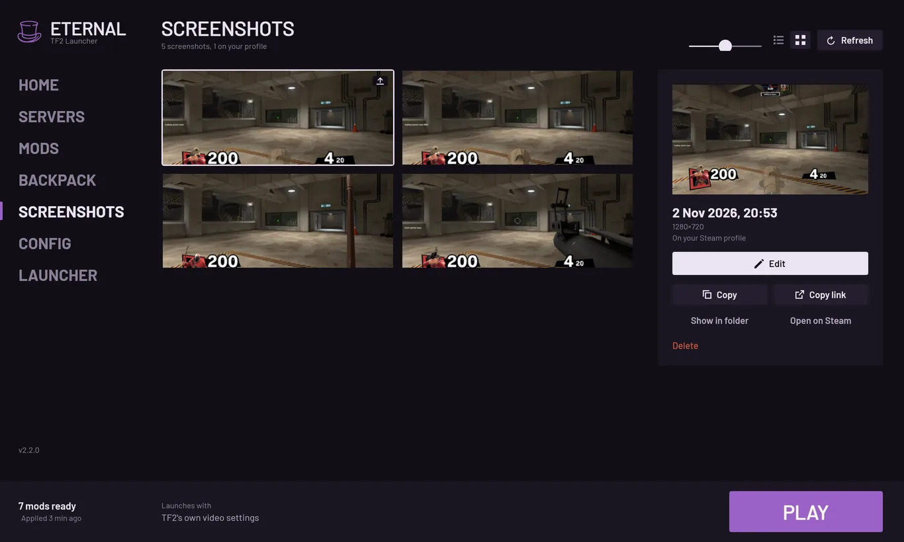

-

Add a mod
Drag a VPK, a folder, or a ZIP, RAR or 7z download onto the window. Loose files, like a lightwarp or a hitsound with no folders around it, are placed by matching their names against the game's own files.
-

Set the order
When two mods change the same file, the one higher up wins. Each mod lists the files it wins and loses, so you can see why a skin didn't show up.
-

Press Play
Your mods are applied a moment after each change. Nothing is written while TF2 is running, and Play waits until they're done.
-

Turning them off
Restore vanilla takes your mods out of the game and leaves them in the library for next time.
A launcher
for TF2 mods
Eternal is a free Team Fortress 2 launcher for Windows and Linux. It keeps your mods in one list and loads them in Casual with cueki's casual-pre-loader.
Version 2.2.1 · Windows and Linux · Free and open source

Your mod list
Casual servers ignore most custom files. Eternal runs cueki's casual-pre-loader for you, so most hitsounds, skins, particles and HUDs still show up there.


GameBanana in the Mods tab
Browse GameBanana's TF2 mods and sounds by category, search and sort them, and install what you like without leaving the launcher.

- You pick the files
- Plenty of uploads come as several files, like standard and high-quality builds. You tick the ones you want before anything downloads.
- Checked before installing
- Files only come from gamebanana.com, and each has to match the size, MD5 checksum and virus scan GameBanana lists for it.
- Versions in one archive
- If a download holds alternatives, like a 54 and a 70 FOV build, you choose which to install. Versions that change the same files are marked.


Servers near you
The Servers tab lists community servers in your region and asks each one for its map, players and ping. Double-click to join. If TF2 isn't open yet, it starts with your mods and settings and goes straight in.

- Fake players stay out
- Some servers claim a crowd their own player list doesn't have. Those are marked and hidden until you ask for them.
- Honest pings
- When a server answers through a relay near you, its ping is shown as what the distance allows, not the number the relay sends back.
- Your favorites, everywhere
- Favorites and history are the game's own, so a server you star in TF2 shows up here and the other way round.
- Join when free
- On a full server it keeps checking for ten minutes and joins as soon as a slot opens.
The list comes from GameMonitoring, plus teamwork.tf's community lists if you add your own key in the launcher's settings.
Settings, explained
Every option says what it does, whether it costs frames and what TF2's default is. Anything you leave alone stays with TF2.
- Binds by pressing the key
- Click, press the key, mouse button or scroll wheel, then type the command.
- Profiles to start from
- Competitive, Max Performance, Max Quality and Balanced, or your own.
- Share your setup
- Copy it as a code to paste in any chat, or save one file that also carries mods that aren't on GameBanana. Importing shows what changes first, then downloads the GameBanana mods by their exact file and puts everything in order.
- See-through weapons
- One switch, with any HUD. The launcher adds what it needs on top of your HUD instead of editing it.
- Search by name or cvar
- Type "fov" or "viewmodel_fov", either finds it.

Your autoexec is left alone
What you change goes into one marked block at the end of autoexec.cfg. Everything outside it stays as you wrote it, and the original is kept as autoexec.cfg.eternal-backup.
This is the block after setting a field of view, fast weapon switch, damage numbers, a frame cap and one voice bind:
// === ETERNAL LAUNCHER MANAGED BLOCK — do not edit between these markers ===
// Gameplay
fov_desired 90
hud_fastswitch 1
// Combat Feedback
hud_combattext 1
// Weapon View
viewmodel_fov 70
// Performance
fps_max 240
// Binds
bind "f" "voicemenu 0 0"
// === ETERNAL LAUNCHER MANAGED BLOCK END ===
Backpack prices
Eternal reads your public TF2 inventory from Steam and prices it with backpack.tf data from pricedb.io, in keys and refined.
Pick an item to see what sellers ask, what buyers offer and its Steam Market price in your currency. You can sort by value and filter by quality, class or tradability.
Renamed items show their new name, with the original above it, and their custom description. Add your own Steam Web API key and items with a decal show it too.
Your screenshots
Every TF2 screenshot Steam keeps for you, in one place. Crop or turn one, blur out names, fix the light, add text or arrows, then copy it or put it on your Steam profile.
An edit is saved over the same file, so Steam can still upload it, and the original is kept for Revert. Once Steam has uploaded a screenshot, Copy link gives you its steamcommunity.com page.

Eight themes
Click one and this page switches to it. The launcher also takes any accent colour, which the hat icon follows, your own TF2 screenshots as a background, and a bigger or smaller interface.
Installing
Both downloads include everything they need, so there's no .NET or Python to install first.
Coming from 1.x? Your settings, profiles and mods carry over on the first start.
From 2.1.1 on it updates itself when you quit. You can turn that off in its settings.
Download 2.2.1Windows
- Run EternalLauncher-2.2.1-win-x64-setup.exeno admin rights
- Or unzip the portable build anywherekeeps its data next to it
Linux
tar xf EternalLauncher-2.2.1-linux-x64.tar.gzcd EternalLauncher && ./install.shadds a menu entry- Install wine too, for custom props and robotsoptional
- Changed your mind?
./install.sh --removekeeps your settings
Open Eternal, pick your mods, press Play
Questions
Do mods load in Casual? Most visual ones do: particles and unusual effects, weapon and cosmetic skins, war paints, map textures, props and HUDs. Full player-model swaps are hit or miss, because the server often forces the original model back. The Mods tab warns you about models with a known problem before you launch.
Is downloading from GameBanana safe? Eternal only downloads files that GameBanana's virus scan passed, only from gamebanana.com, and checks each one against the size and MD5 checksum GameBanana lists. It's still someone else's upload, so the usual care applies.
Does it change the game itself? No. Eternal never touches the game's code or memory. It writes the packed mods into tf/custom and one marked block into autoexec.cfg, the same places any HUD or hitsound goes.
Can I still start TF2 from Steam? Yes. Copy the launch line from Config, Launch Options into TF2's launch options in Steam so the preloader's setup still runs when the game boots.
Where do my mods live? In the launcher's own folder, not in tf/custom. Restore vanilla removes what was put in the game and keeps your library.
Does it cost anything? No. It's free and open source under the MIT license, with no account to make.
Something broke? Open an issue on GitHub and attach your logs. They're in ~/.local/share/eternal-launcher/logs on Linux and %LOCALAPPDATA%\Eternal TF2 Launcher\logs on Windows.

Built on cueki's preloader
The part that gets mods into Casual is cueki's casual-pre-loader. Eternal ships it unchanged and builds the launcher around it, so the credit for that part goes to cueki and its contributors. If all you want is the preloader, use the original.
Thanks also to backpack.tf and pricedb.io for prices, GameBanana and its creators, Deadlock Mod Manager for ideas on recovery and conflicts, and Jeremy Tribby for the Barlow typeface.
casual-pre-loader on GitHub